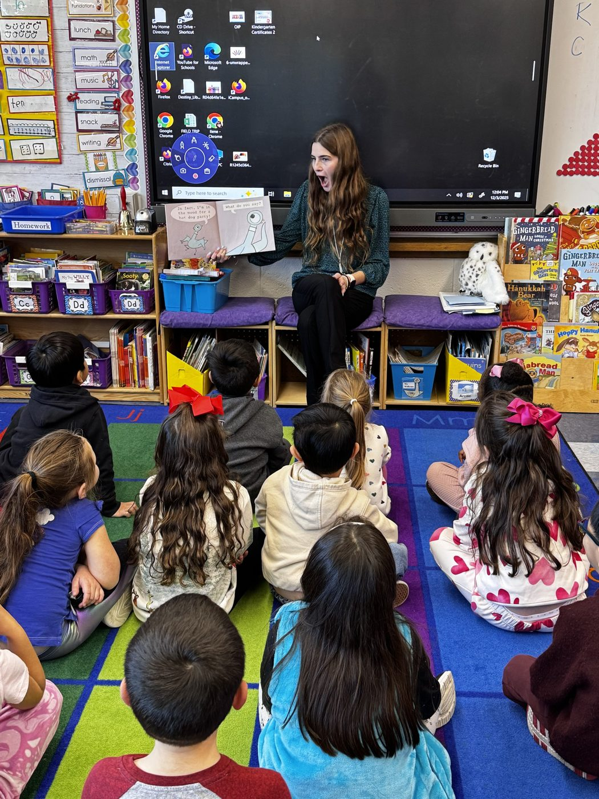
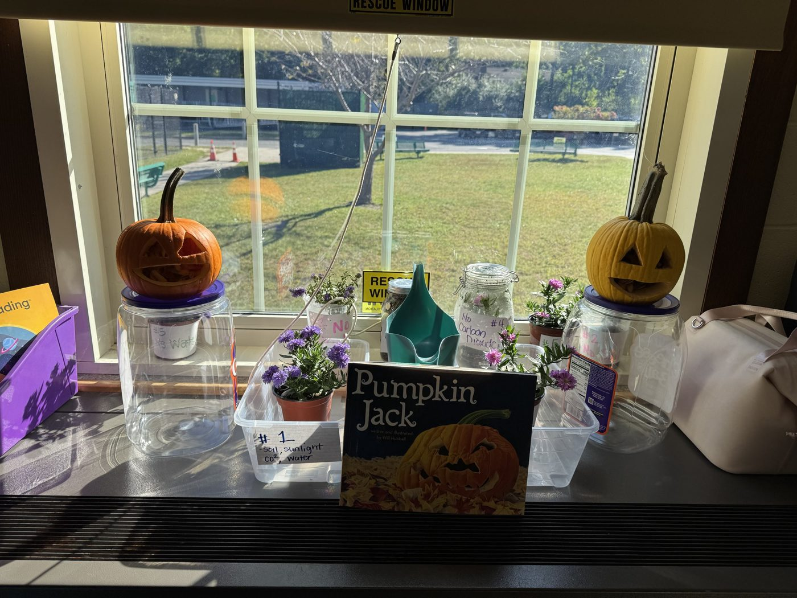
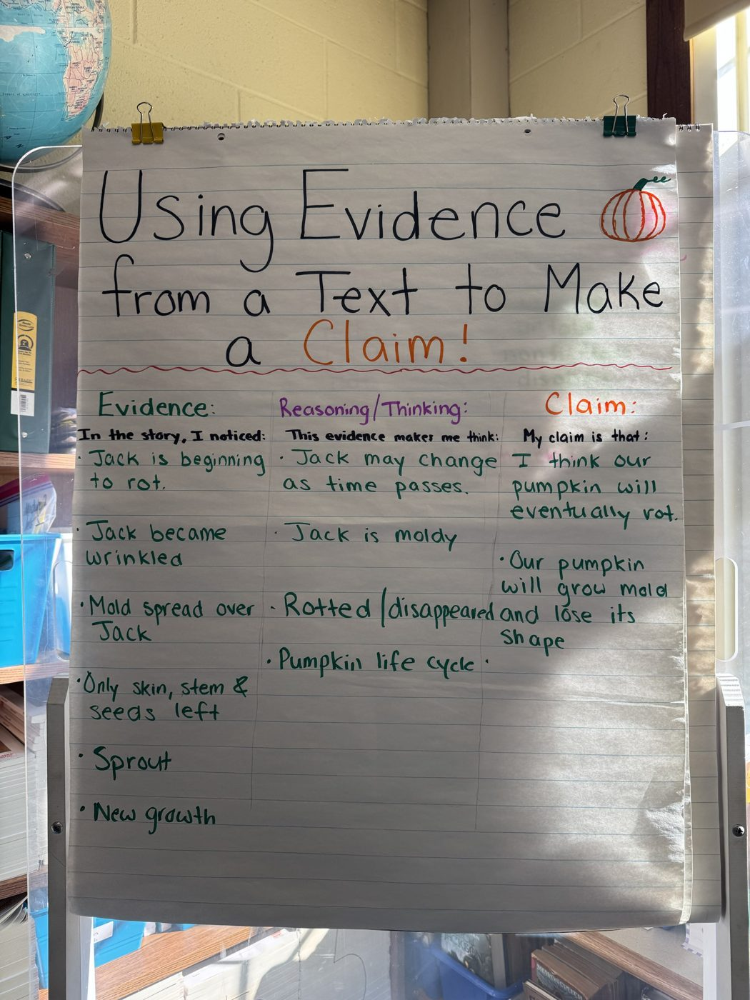
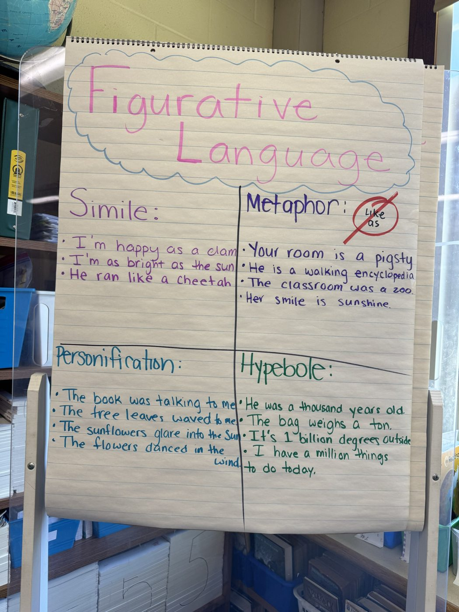

II · 2 Teaching Artifacts & Reflections
Pictures of My Lessons
me teaching & my anchor charts





Using Evidence from a Text to Make a Claim
Built live with students during my Pumpkin Jack lesson. At each stopping point in the read-aloud, the class recorded what they noticed in the story (Evidence), what that evidence made them think (Reasoning), and finally a Claim about what will happen to our class pumpkin.
The sentence starters at the top of each column (“In the story, I noticed…”, “This evidence makes me think…”, “My claim is that…”) doubled as scaffolds for students' own Claim & Evidence Sheets.


Figurative Language
A student-friendly reference for the four types of figurative language: simile, metaphor, personification, and hyperbole. Each section is color-coded with relatable examples, and the crossed-out “like / as” makes the difference between similes and metaphors easy to spot at a glance.
The chart stays up in the classroom so students can return to it while reading and writing poetry.